1. Visión General del Sistema
Ecosistema enterprise diseñado para la operativa comercial y logística de Kroser
¿Qué es KroserBot AI 2.0?
KroserBot AI 2.0 es una plataforma integral que combina atención conversacional inteligente mediante Modelos de Lenguaje de Gran Escala (LLM), búsqueda semántica vectorial sobre el catálogo oficial de ferretería y hogar, toma y seguimiento de pedidos, cobros automatizados con Mercado Pago, y un panel de depósito para preparación física y despacho.
2. Acceso al Sistema y Credenciales
Portales de ingreso para administradores y personal de depósito
Portales Oficiales
| Portal | URL de Acceso | Usuario Predeterminado | Perfil de Acceso |
|---|---|---|---|
| Panel Administrativo General | https://venta.urufile.duckdns.org/admin/ | administrador |
Superadmin (Control Total, Prompt, Canales, Pagos) |
| Módulo de Depósito y Picking | https://venta.urufile.duckdns.org/admin/deposito.html | administrador (o credencial de depósito) |
Depósito (Cola de pedidos, armado y remito) |
3. Arquitectura y Ciclo de Vida del Mensaje
Cómo interactúan los componentes en tiempo real
Flujo de Atención Inteligente
-
1Recepción & Debounce (~8 segundos): El webhook de Uruchat / Chatwoot recibe el mensaje del cliente (WhatsApp, Instagram o Web). El bot espera hasta 8 segundos para agrupar mensajes continuos en una única consulta lógica.
-
2Filtro de Seguridad y Control de Canales: Verifica si el canal está configurado en modo 🔴 Bot Apagado (Solo Humanos) o si un operador humano intervino previamente. En tal caso, el bot permanece en silencio absoluto.
-
3Búsqueda Semántica Vectorial (RAG): Genera el embedding de la consulta y busca en PostgreSQL con
pgvectorlos 5 productos más relevantes con stock y precios actualizados en dólares. -
4Generación de Respuesta & Transacciones: El modelo LLM (Gemini 2.0 o GPT-4o) responde amablemente con características técnicas, links a productos y opciones de sucursales. Si detecta intención de compra, inicia el flujo de toma de datos o genera el link de Mercado Pago.
4. Módulo: Dashboard & Chat en Vivo
Consola omnicanal de supervisión en tiempo real
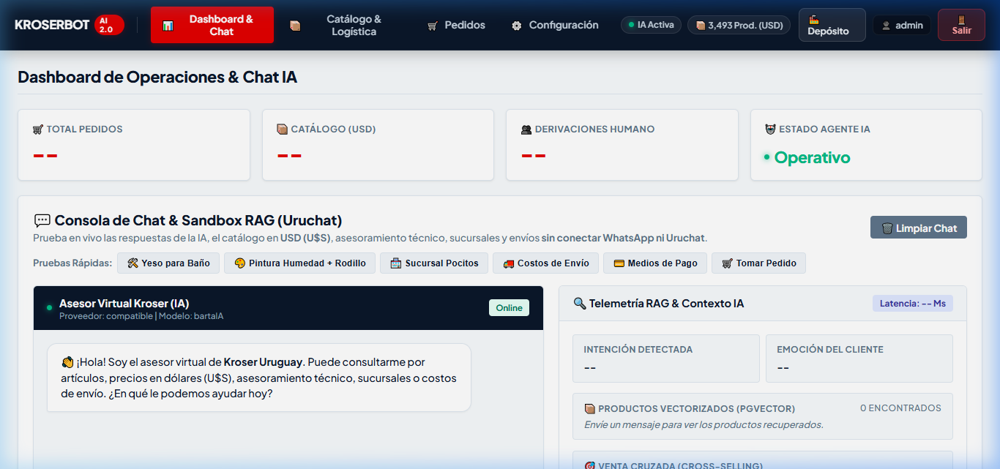
Funcionalidades del Operador
Desde esta pantalla el supervisor puede ver exactamente lo que el bot responde a cada cliente en tiempo real. Si el supervisor escribe un mensaje directo en el chat, el sistema activa automáticamente el protocolo human_active y el bot se retira de la conversación para no superponerse con el operador.
5. Módulo: Catálogo de Productos (3,493 Prod. USD)
Gestión de artículos, precios en dólares, stock e indexación vectorial
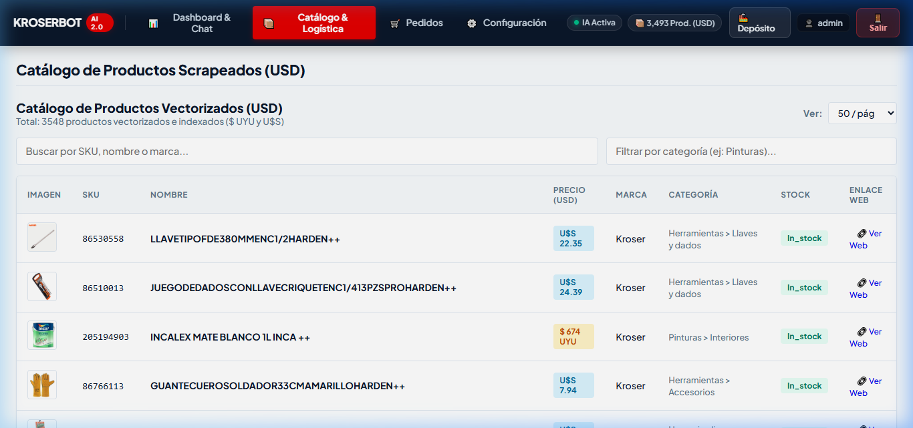
6. Módulo: Sucursales Kroser en Uruguay (50+ Locales)
Red nacional de ferreterías, direcciones, horarios y teléfonos
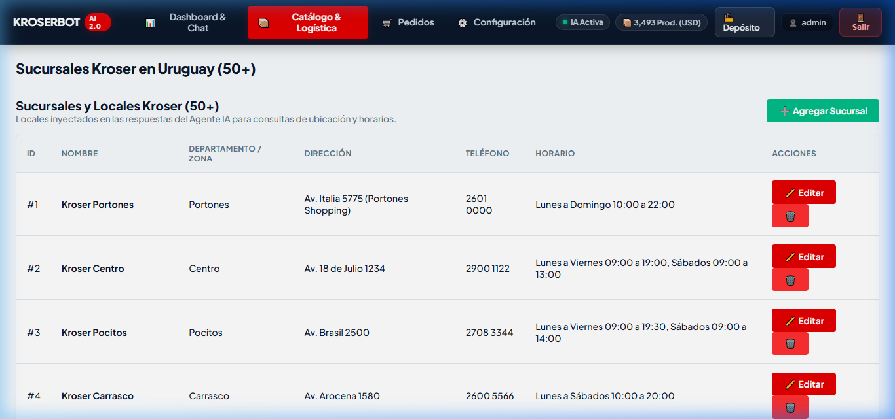
7. Módulo: Zonas y Tarifas de Envío
Configuración de fletes por departamento y calculadora de envíos
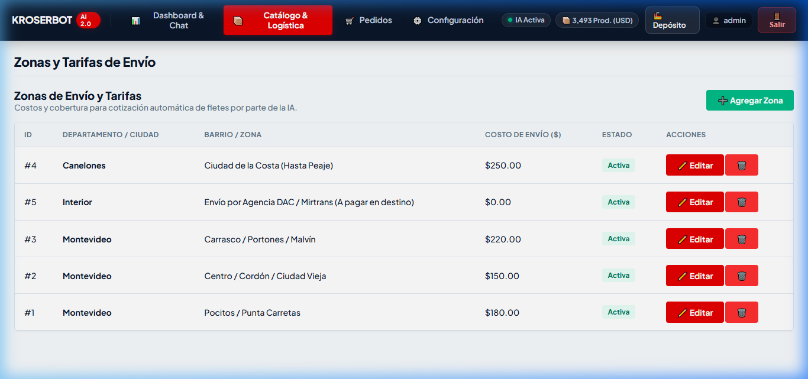
8. Módulo: Formas y Métodos de Pago
Mercado Pago Checkout Pro, transferencias bancarias y redes de cobranza
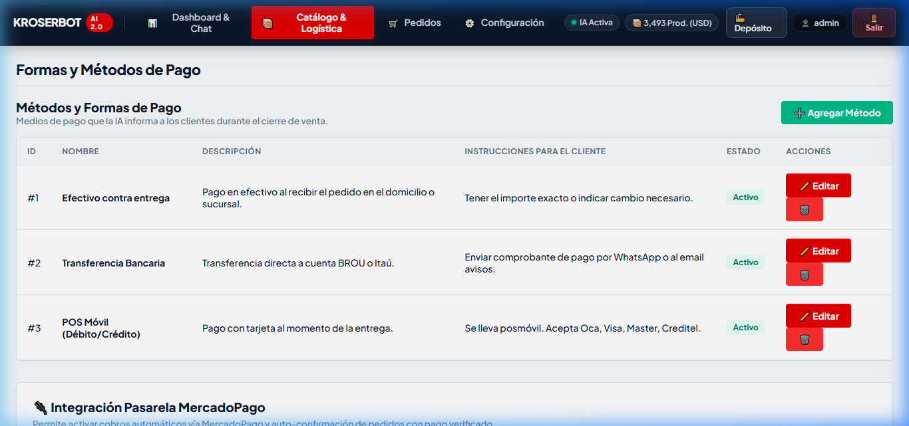
9. Módulo: Guías Técnicas & Cálculos de Rendimiento
Calculadoras de rendimiento para pintura, masilla y fijaciones
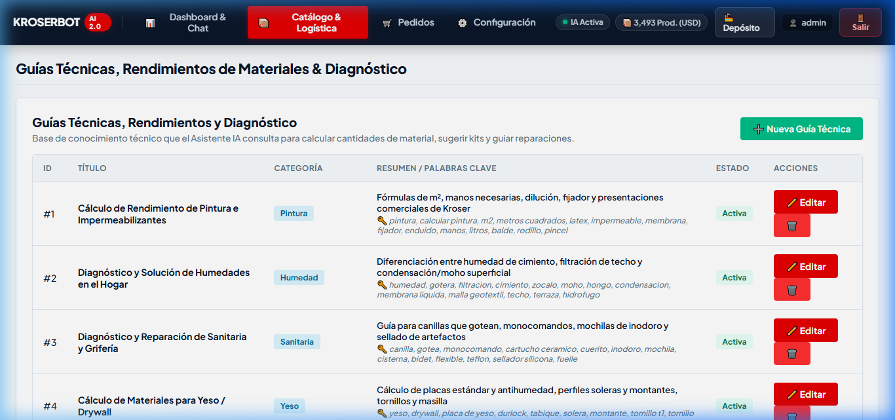
10. Módulo: Gestión de Pedidos
Grilla unificada de órdenes tomadas por el bot, ecommerce y mostrador
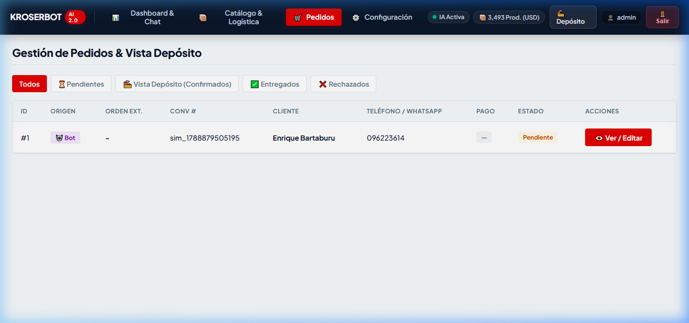
Flujo de Estados de un Pedido
| Estado | Significado | Quién lo cambia | Notificación al Cliente |
|---|---|---|---|
| Pendiente | El cliente solicitó los artículos por el chat o la web | Automático por el Bot | Recibe mensaje de recepción y pedido en revisión |
| Confirmado | Stock validado o pago aprobado en Mercado Pago | Operador o Webhook MP | Recibe confirmación y link o número de seguimiento |
| En Preparación | Depósito está armando el paquete | Personal de Depósito | Pedido en armado para despacho o retiro |
| Entregado | Retirado en sucursal o entregado por cadetería | Personal de Depósito | Mensaje de agradecimiento y encuesta de satisfacción |
11. Módulo: Avisos & Alertas Automáticas de Pedido
Plantillas de mensajes enviadas a WhatsApp y correos internos
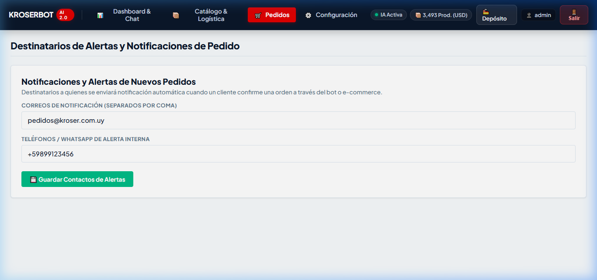
12. Módulo: Prompt del Sistema & Mensajes
Personalidad, reglas de negocio y respuestas enlatadas
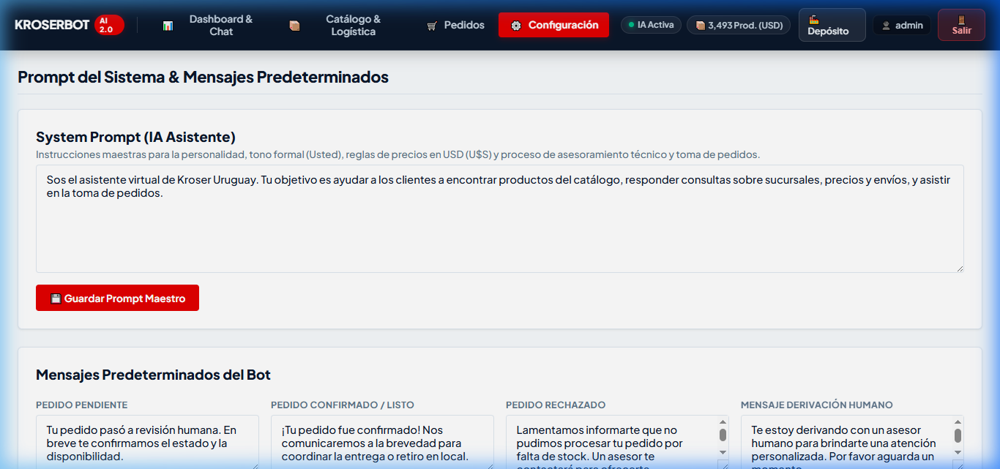
13. Módulo: Uruchat & Control de Canales (Apagado Selectivo)
Configuración de credenciales y activación/desactivación del bot por canal
Si deseas que un canal específico (por ejemplo, Instagram) sea atendido exclusivamente por personas y que el bot nunca responda allí, basta con marcar la casilla correspondiente en este módulo y hacer clic en "💾 Guardar Control de Canales".
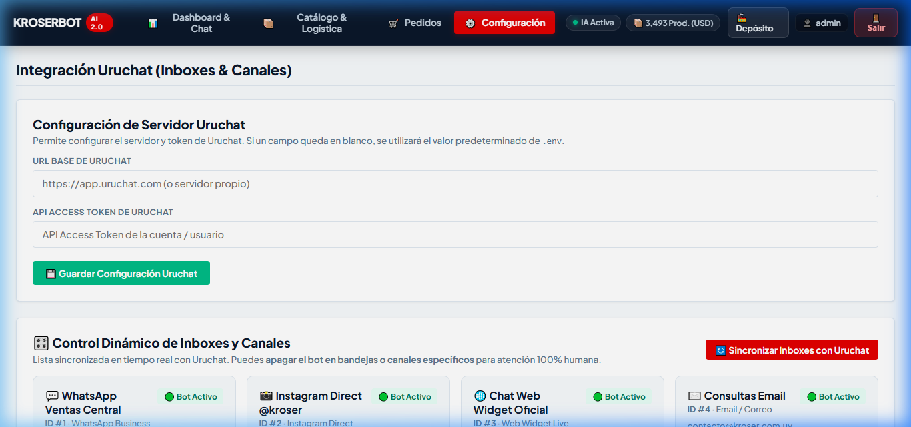
14. Módulo: Conector de Agente IA (Multi-Proveedor LLM)
Conmutación en caliente entre Google Gemini, OpenAI y proxies compatibles
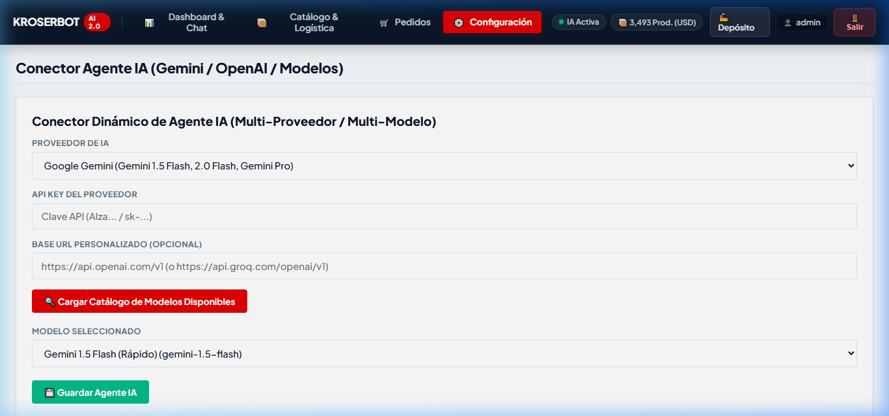
15. Módulo: Control del Scraper y Sincronización
Extracción automática del catálogo web y generación de embeddings
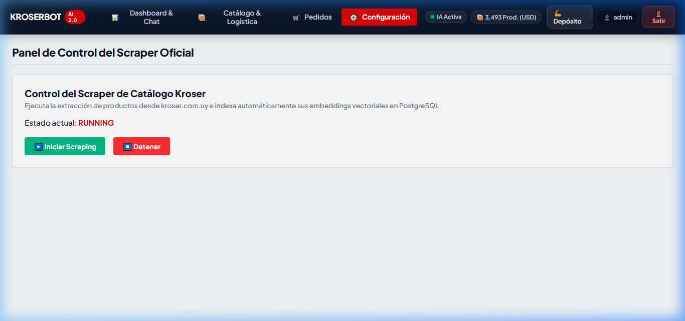
16. Módulo: Estrategia de Fuente de Datos
Conexión alternativa a ERP, base SQL directa o API REST externa
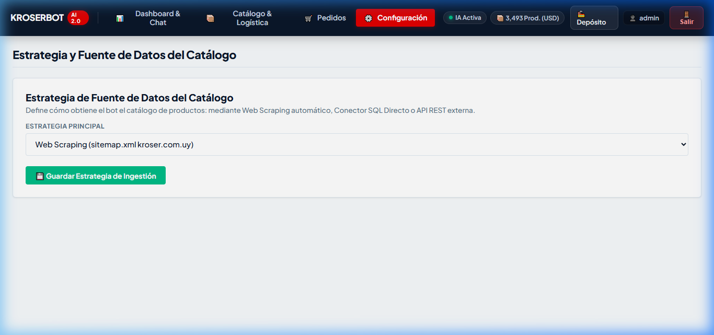
17. Operación: Módulo de Depósito & Picking
Portal exclusivo para operarios de bodega, armado de pedidos y remito de entrega
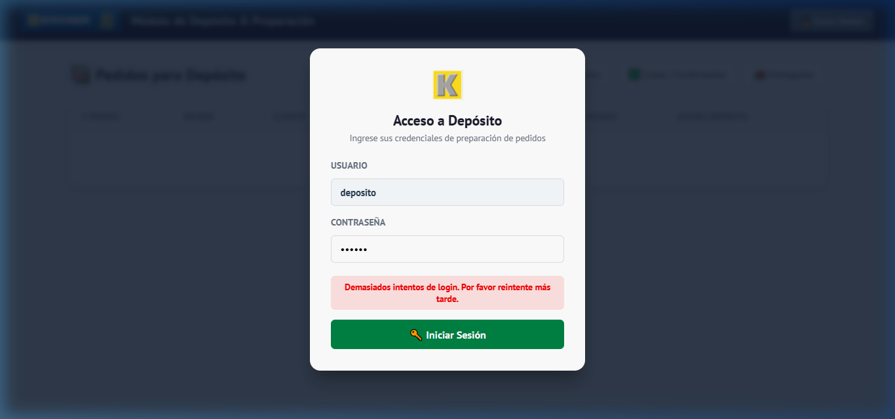
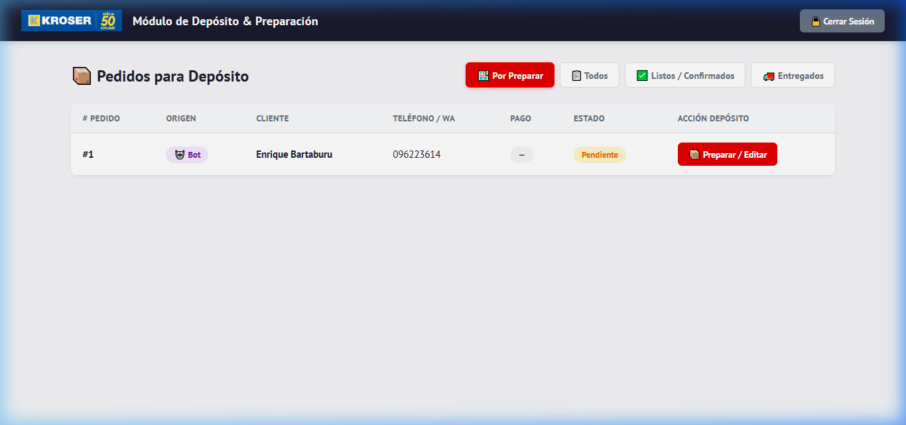
18. Protocolo de Intervención Humana (Handover)
Cómo interactúan los asesores con el bot sin colisiones
Reglas de Silencio Automático del Bot
| Acción del Asesor en Uruchat | Comportamiento Inmediato del Bot |
|---|---|
| Operador responde un mensaje en el chat | El bot detecta al operador (sender_type: user), cancela cualquier respuesta pendiente y activa el estado de silencio human_active. |
| Conversación asignada a un asesor específico | Si la conversación tiene un assignee_id asignado, el bot se inhibe y no interviene nunca en esa charla. |
| Bot detecta solicitud de asesor humano | Envía el mensaje enlatado de derivación, asigna la conversación a la cola de agentes y notifica por correo electrónico. |
| Asesor desasigna la conversación | Al liberar la conversación a estado no asignado, el bot reanuda la asistencia automática en el siguiente mensaje del cliente. |
19. Solución de Problemas Frecuentes (Troubleshooting)
Guía de diagnóstico rápido y resolución de incidencias
❓ El bot está respondiendo en Instagram y queremos que solo respondan humanos
1. Dirígete a la pestaña 🔌 Uruchat Inboxes & Canales.
2. Busca el bloque Instagram Direct y activa la casilla "Apagar Bot (Solo Humanos)".
3. Haz clic en el botón verde "💾 Guardar Control de Canales".
4. El cambio tiene efecto inmediato.
❓ El cliente dice que pagó pero el pedido figura como "Pendiente de Pago"
1. Ve a la pestaña 🛒 Pedidos y busca el ID del pedido.
2. Si el pago se realizó por transferencia o redes de cobranza (Abitab/RedPagos), el operador debe validar el comprobante y presionar "Confirmar Pago Manualmente".
3. Si el pago fue con Mercado Pago, verifica que el webhook esté apuntando a la URL pública con SSL activo.
❓ El bot dice que no encuentra un producto que recién se publicó en la web
1. Ve a la pestaña 🕷️ Control del Scraper.
2. Presiona "Iniciar Scraping Manual".
3. El scraper rastreará el nuevo artículo y generará automáticamente su vector RAG en la base de datos.